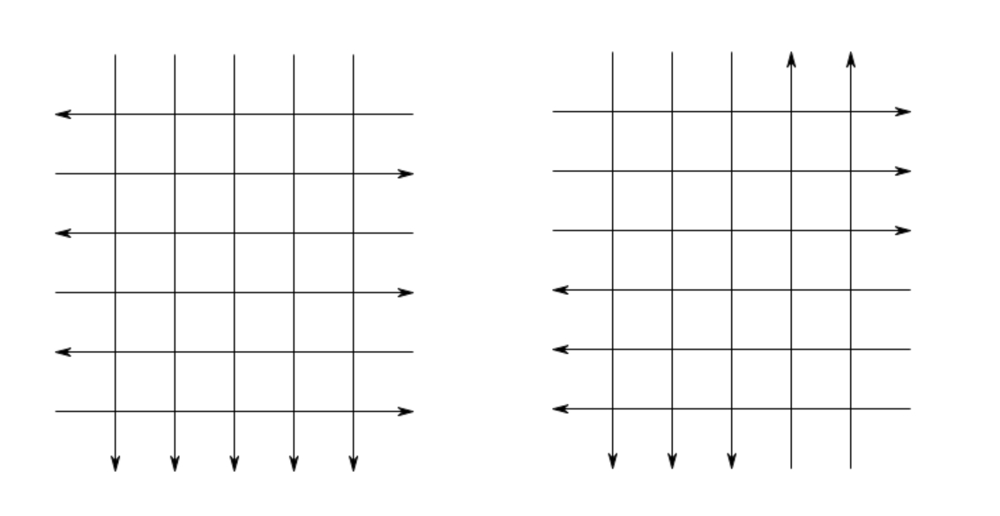

Project Euler 716
Project Euler 716
题目
Grid Graphs
Consider a directed graph made from an orthogonal lattice of \(H\times W\) nodes. The edges are the horizontal and vertical connections between adjacent nodes. \(W\) vertical directed lines are drawn and all the edges on these lines inherit that direction. Similarly, \(H\) horizontal directed lines are drawn and all the edges on these lines inherit that direction.
Two nodes, \(A\) and \(B\) in a directed graph, are strongly connected if there is both a path, along the directed edges, from \(A\) to \(B\) as well as from \(B\) to \(A\). Note that every node is strongly connected to itself.
A strongly connected component in a directed graph is a non-empty set \(M\) of nodes satisfying the following two properties:
All nodes in \(M\) are strongly connected to each other.
\(M\) is maximal, in the sense that no node in \(M\) is strongly connected to any node outside of \(M\).
There are \(2^H\times 2^W\) ways of drawing the directed lines. Each way gives a directed graph \(\mathcal{G}\). We define \(S(\mathcal{G})\) to be the number of strongly connected components in \(\mathcal{G}\).
The illustration below shows a directed graph with \(H=3\) and \(W=4\) that consists of four different strongly connected components (indicated by the different colours).

Define \(C(H,W)\) to be the sum of \(S(\mathcal{G})\) for all possible graphs on a grid of \(H\times W\). You are given \(C(3,3) = 408\), \(C(3,6) = 4696\) and \(C(10,20) \equiv 988971143 \pmod{1\,000\,000\,007}\).
Find \(C(10\,000,20\,000)\) giving your answer modulo \(1\,000\,000\,007\).
解决方案
在此类网格中，每一步只能水平或竖直移动一格，并且方向只由所在行/列决定。因此，任意有向环都必然是一个轴对齐矩形的边界（顺时针或逆时针）。 理由很直观：一个闭合路径必须同时出现向左和向右，也必须同时出现向上和向下。因此环路径至少覆盖两个不同行、两不同列。取环上出现的最小/最大行号、最小/最大列号，它们围成一个最小包围矩形。环无法进入矩形外部（否则包围矩形就不是最小），也无法穿过内部再出来而不破坏方向一致性，因此环只能沿着矩形边界走完一圈，并且只能是顺时针或逆时针两种方向。
于是，存在非平凡（大小 \(>1\)）中强连通分量（SCC）当且仅当存在某个有向矩形圈”。 强连通的本质由这些矩形圈粘合而来。
若一个点属于某个有向矩形圈（或在其内部可达），它就会落入某个大小 \(>1\) 的 SCC；否则它就是一个单点 SCC。
进一步有一个很重要的性质：此类网格里，所有大小 \(>1\) 的强连通部分会合并成一个整体，因此整张图最多只有一个大 SCC。
原因是矩形圈的并集强连通：若两个有向矩形圈有交叠（共享点或区域），可以沿圈从一个到达交叠处，再进入另一个圈并返回，形成互相可达。 不断扩展可得：所有“在某个矩形圈里/可达”的点最终都连成一个强连通块。
因此每个图 \(\mathcal G\) 只有两种可能：
- 没有大 SCC（图中无有向环）\(\Rightarrow\) 每个点都是单点 SCC，\(S(\mathcal G)=HW.\)
- 存在大 SCC，设其大小为 \(L\ge 2\)：其余点全是单点 SCC，\(S(\mathcal G)=(HW-L)+1 = HW-L+1.\)
那么我们令：
- 总图数 \(N = 2^{H+W}\)
- \(T = HW\cdot N\)：把“每个点先当作一个 SCC”得到的总计数
- \(M\)：对所有图，把“大 SCC 的点数”求和（没有大 SCC 的图贡献 \(0\)）
- \(S\)：存在大 SCC 的图的数量
则对每张图：
- 若无大 SCC：贡献 \(HW\)
- 若大 SCC 大小为 \(L\)：贡献 \(HW-L+1\)
所以总和为\(C(H,W)=HW\cdot N - M + S.\)接下来只需计算 \(M\) 与 \(S\)。
首先我们计算\(M\)。固定一个位置 \((i,j)\)。它落入大 SCC 等价于：它被某个顺/逆时针的矩形圈覆盖（或落在由矩形圈连成的强连通区域中）。
先只看“行方向”（长度为 \(n\) 的 \(0/1\) 串，表示每条线的方向）。以顺时针矩形圈为例，点所在的行号为 \(i\) 时，需要：
- 在 \(\le i\) 的某条行上出现“向右”
- 在 \(\ge i\) 的某条行上出现“向左”
我们令\(m_1(i,n)\) 计数的是，在长度为 \(n\) 的方向序列中，满足下面两个条件的赋值方案数：前 \(i\) 条线里至少有一条是向右，从第 \(i\) 条到第 \(n\) 条里至少有一条是向左，用补集计数：
- “\(\le i\) 全都不是右” \(\Rightarrow\) 前 \(i\) 条固定一种方向，共 \(2^{n-i}\) 种
- “\(\ge i\) 全都不是左” \(\Rightarrow\) 后 \(n-i+1\) 条固定一种方向，共 \(2^{i-1}\) 种（注意第 \(i\) 条被后一条件固定时，前面仍有 \(i-1\) 条自由）
- 两种失败情况不可能同时发生（第 \(i\) 条会矛盾），因此无需加回交集
于是\(m_1(i,n)=2^n - 2^{i-1} - 2^{n-i}.\)
当一个点同时能落入“顺时针矩形圈”和“逆时针矩形圈”的覆盖中，需要两侧都出现两种方向。
我们令 \(m_2(i,n)\) 计数的是：在长度为 \(n\) 的方向序列中，使得前 \(i\) 条线同时出现向左与向右，并且从第 \(i\) 条到第 \(n\) 条也同时出现向左与向右的赋值方案数。
不失一般性，先固定第 \(i\) 条线方向为向右。
对前半段 \([1,i]\) 而言，由于第 \(i\) 条已经是向右，要使前半段同时出现两种方向，等价于要求在前 \(i-1\) 条中至少出现一次向左。因此前 \(i-1\) 条的取法不能全为向右，共有 \(2^{i-1}-1\) 种。
对后半段 \([i,n]\) 而言，同理由于第 \(i\) 条已经是 向右，要使后半段同时出现两种方向，等价于要求在第 \(i+1\) 到第 \(n\) 条中至少出现一次 向左。因此后 \(n-i\) 条的取法不能全为 向右，共有 \(2^{n-i}-1\) 种。
因此在固定第 \(i\) 条线方向为向右的前提下，满足条件的方案数为 \((2^{i-1}-1)(2^{n-i}-1)\)。而当第 \(i\) 条线方向为向左时，讨论完全对称，得到同样的计数。于是乘以 \(2\)，最终得到\(m_2(i,n)=2(2^{i-1}-1)(2^{n-i}-1).\)
我们现在将二维合并得到单点落入大 SCC 的方案数。对格点 \((i,j)\)：
- 顺时针覆盖：行满足 \(m_1(i,H)\)，列满足 \(m_1(j,W)\)，独立相乘
- 逆时针覆盖：同样再来一份，因此乘 \(2\)
- 两者交集（被双向覆盖）被重复计数一次，需要减去 \(m_2(i,H)m_2(j,W)\)
所以\(g(i,j)=2,m_1(i,H)m_1(j,W)-m_2(i,H)m_2(j,W).\)总的大 SCC 点数和为
\[ M=\sum_{i=1}^H\sum_{j=1}^W g(i,j). \]
由于它完全可分离：\(M=2M_1(H)M_1(W)-M_2(H)M_2(W),\)其中\(\displaystyle{M_1(n)=\sum_{i=1}^n m_1(i,n),M_2(n)=\sum_{i=1}^n m_2(i,n).}\)
计算几何级数可得:
\[ \begin{aligned} M_1(n) &=\sum_{i=1}^n\left(2^n-2^{i-1}-2^{n-i}\right) \\ &=n2^n-(2^n-1)-(2^n-1) \\ &=2^n(n-2)+2,\\ M_2(n) &=\sum_{i=1}^n\left(2^n-2^{i-1}-2^{n-i}+2\right) \\ &=M_1(n)+2n \\ &=2^n(n-4)+2n+4. \end{aligned} \]
总图数为 \(2^{H+W}\)。不存在大 SCC的情况包括：
- 所有水平线同向：\(2\) 种，竖线任意 \(2^W\) 种\(\Rightarrow 2^{W+1}\)
- 所有竖直线同向：\(\Rightarrow 2^{H+1}\)
- 上面两种重复计数了“水平同向且竖直同向”的 \(4\) 个图，需减去 \(4\).
此外，当水平与竖直都不是全同向时，仍有一类特殊构型完全由四个角吸走，导致没有剩余区域形成大 SCC。这类构型等价于：选一条水平切分线与一条竖直切分线（共有 \((H-1)(W-1)\) 种），再选择“朝向两对角/背离两对角”的对称方式（\(2\) 种），总计\(2(H-1)(W-1)\)张。因此无大 SCC 的图数为\(2^{W+1}+2^{H+1}-4 + 2(H-1)(W-1),\)于是
\[ S=2^{H+W}-\left(2^{W+1}+2^{H+1}-4+2(H-1)(W-1)\right). \]

将\(C(H,W)=HW\cdot 2^{H+W} - M + S\)代入上面 \(M,S\) 的表达式并整理，可化为一个非常紧凑的闭式：
\[ C(H,W)= 9\cdot 2^{H+W} +2^{H+1}(HW-4W-5) +2^{W+1}(HW-4H-5) +2(HW+5H+5W+5) \]
代码
1 | H = 10000 |